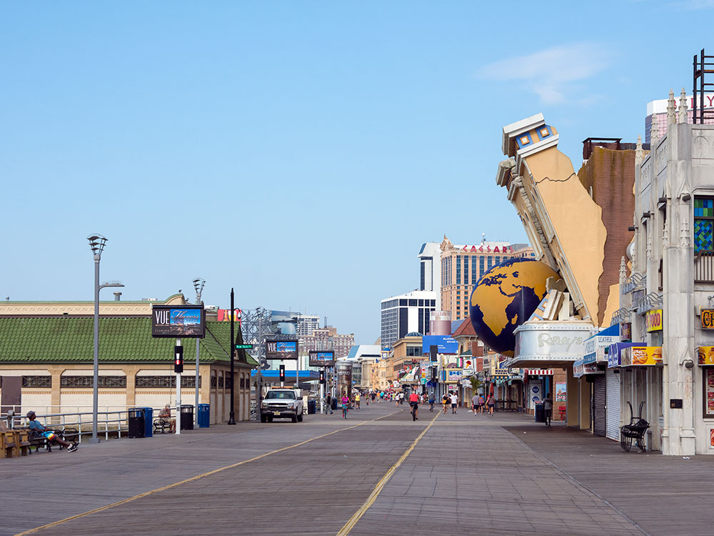
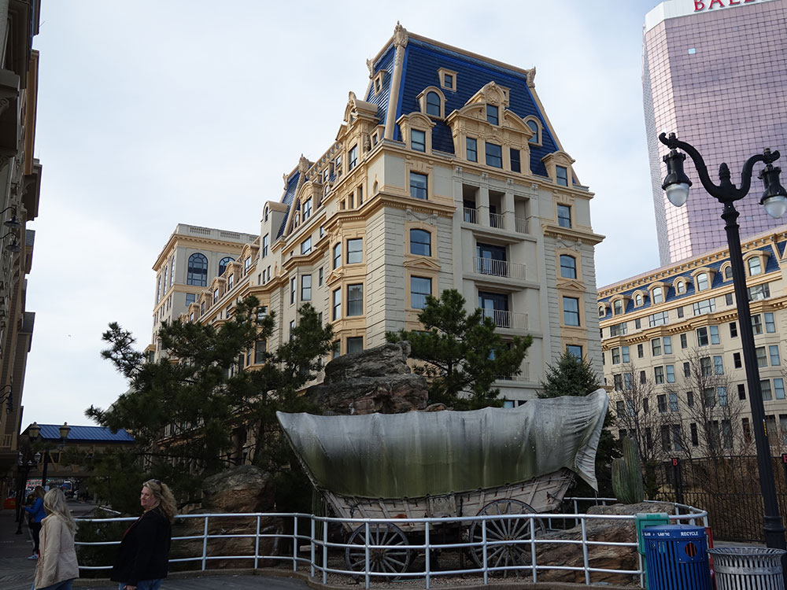
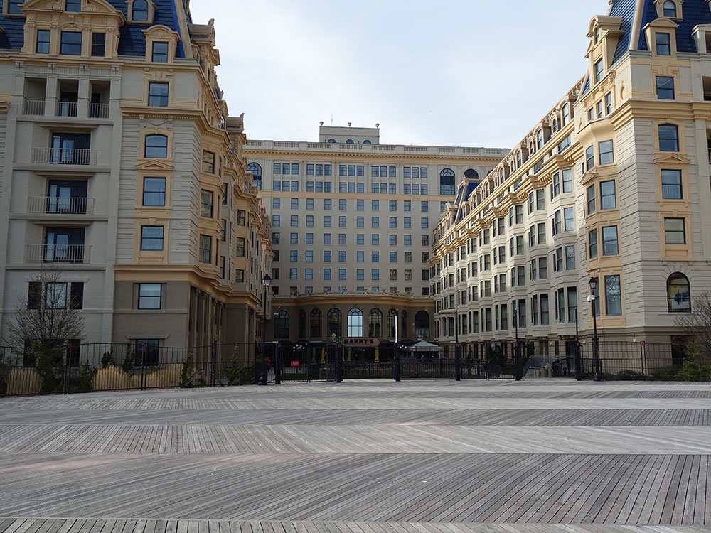
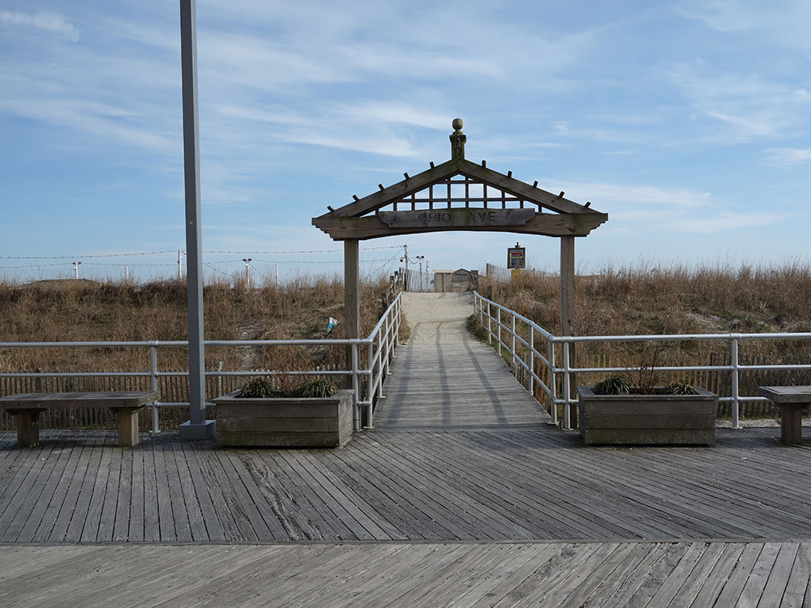
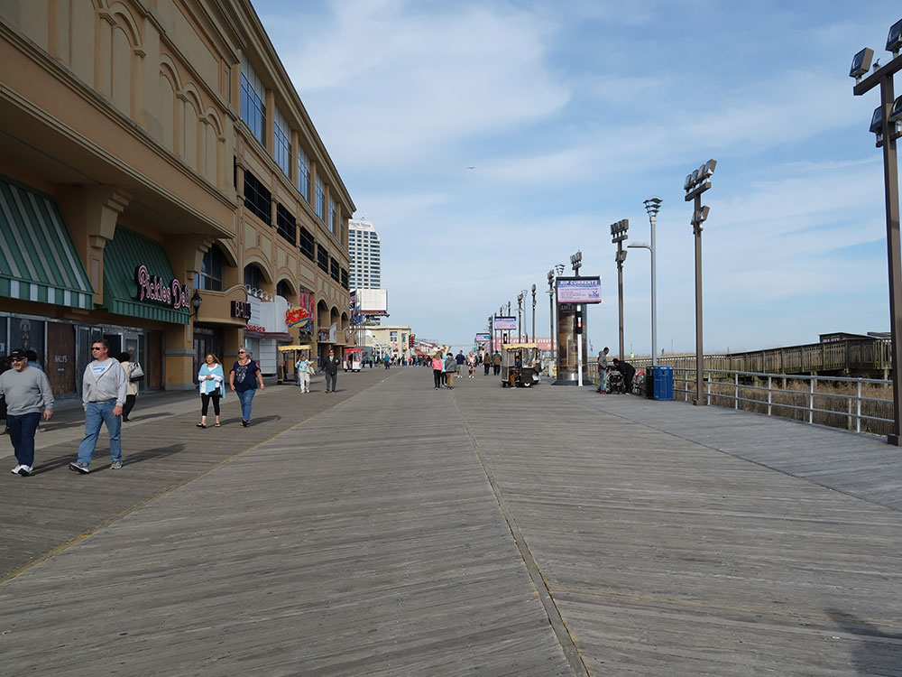
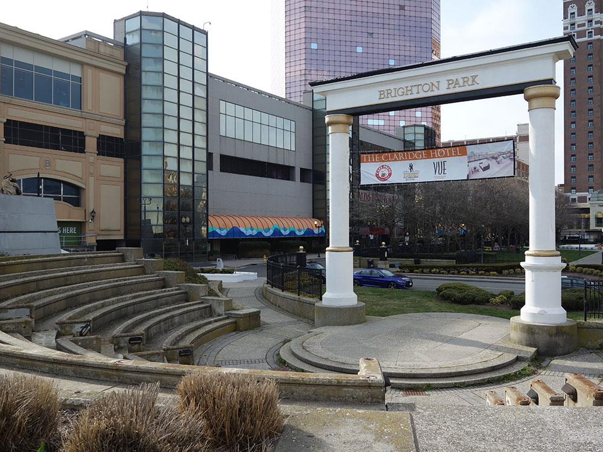
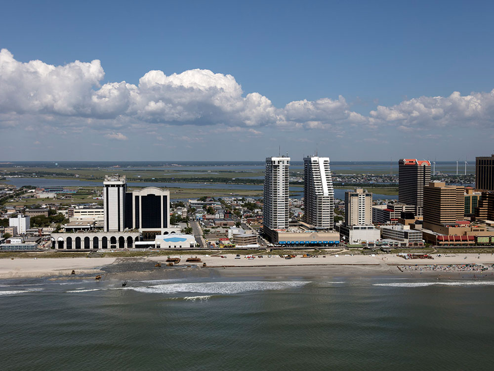

_004_-_Ballys_Complex.jpg){kind=link}
Coastal resort city in New Jersey, known for its casinos, boardwalk, and beaches
General Information
Get on I-676/US-30 E from S Penn Square and N Broad St. Follow I-676, NJ-42 S and Atlantic City Expy E to Christopher Columbus Blvd in Atlantic City. Take Arctic Ave to Atlantic Ave.
Atlantic City is New Jersey's famous seaside resort and casino city, on Absecon Island on the Atlantic coast about 60 miles southeast of Philadelphia and 125 miles south of New York. It is known for its Boardwalk, the first in the United States, for its casinos, the "Gambling Capital of the East Coast," for the Miss America pageant, for saltwater taffy and for the street names of the board game Monopoly. The beaches are free and lifeguarded in summer.
People come to Atlantic City to gamble in the casino resorts, see concerts and shows, walk the Boardwalk, shop at the outlets, eat at restaurants ranging from famous steakhouses to seafood and relax on the beach. It is a popular day trip and weekend trip from New York, Philadelphia and Baltimore, and its mix of old-fashioned seaside amusements and modern casino hotels is unlike any other resort on the East Coast.
Atlantic City was founded in 1854 when the Camden and Atlantic Railroad opened a line from Philadelphia, promoted by Dr. Jonathan Pitney and engineer Richard Osborne. The Boardwalk opened on June 26, 1870 to keep sand out of the hotels, and grand piers, hotels, wicker rolling chairs and saltwater taffy made the city the most popular resort in the country in the early 20th century. Steel Pier opened in 1898, and the Miss America pageant began in 1921. After World War II, the rise of the automobile and air travel caused a long decline, and in 1976 New Jersey voters approved casino gambling in Atlantic City, with the first casino, Resorts, opening in 1978. Several casinos closed in 2014, and the city has since worked to add more entertainment, dining and convention business. Hurricane Sandy in 2012 damaged the Boardwalk, which was rebuilt.
The Boardwalk, about four miles long, is the main attraction, lined with casino hotels, shops, restaurants, amusements and the Boardwalk Hall arena. Steel Pier, with its amusement rides, and Playground Pier are among the best known. The Absecon Lighthouse, first lit in 1857 and the tallest lighthouse in New Jersey at 171 feet, can be climbed for views of the city and the ocean. Major casino resorts include the Borgata, Hard Rock, Ocean Casino Resort, Caesars, Harrah's, Tropicana, Resorts and Golden Nugget, and Tanger Outlets The Walk offers shopping. Nearby in Margate, Lucy the Elephant, a six-story elephant-shaped building from 1882, is a National Historic Landmark.
Boardwalk Hall, built in 1929 with one of the largest pipe organs in the world, hosts concerts, sports events and the Miss America competition, and the casino theaters and the House of Blues host major musical acts and comedians. The Atlantic City Historical Museum on Garden Pier tells the story of the Boardwalk, the pageant and the city. The Absecon Lighthouse has a small museum, and the Ripley's Believe It or Not! museum is on the Boardwalk. Atlantic City has a long history in boxing, with fights held at the casinos, and in the 1920s through the 1960s it was a center for nightclubs and jazz.
The beach and Boardwalk are the main public spaces, with lifeguards in summer. Gardner's Basin, a small maritime park on the bay, has an aquarium and waterfront views. Along the Boardwalk, the Kennedy Plaza and Absecon Lighthouse grounds offer small green spaces, and in Brigantine, just north, the Edwin B. Forsythe National Wildlife Refuge has a driving loop and trails for birdwatching. The Atlantic City Marina District on the bay is popular for boating and sunsets.
Atlantic City has a humid subtropical climate moderated by the ocean. Summers are warm and humid, with highs in the 80s °F and ocean temperatures reaching the low 70s °F in August, and the beach and Boardwalk are busiest from Memorial Day to Labor Day. Spring and fall are mild and less crowded, and the casinos and shows are open year-round, which makes winter a popular time for bargains despite highs in the 40s °F. Nor'easters and hurricanes can bring flooding to the low-lying island.
This article uses material from the Wikipedia article "Atlantic City, New Jersey", which is released under the Creative Commons Attribution-Share-Alike License 3.0. Additional information from Visit Atlantic City, Visit New Jersey, the Absecon Lighthouse, National Weather Service Mount Holly and the official websites of the attractions mentioned.



_006_-_Dennis_Hotel.jpg){kind=link}

_009_-_Dennis_Hotel.jpg){kind=link}

_010.jpg){kind=link}

_011.jpg){kind=link}

_031_-_Arch_and_Amphitheater.jpg){kind=link}
